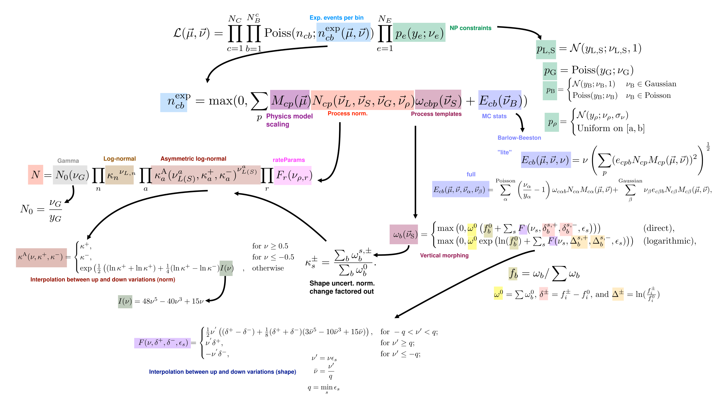

Observation Models and Likelihoods
The Observation Model
The observation model, \(\mathcal{M}( \vec{\Phi})\) defines the probability for any set of observations given specific values of the input parameters of the model \(\vec{\Phi}\). The probability for any observed data is denoted:
where the subscript \(\mathcal{M}\) is given here to remind us that these are the probabilities according to this particular model (though usually we will omit it for brevity).
Combine is designed for counting experiments, where the number of events with particular features are counted. The events can either be binned, as in histograms, or unbinned, where continuous values are stored for each event. The event counts are assumed to be of independent events, such as individual proton-proton collisions, which are not correlated with each other.
The event-count portion of the model consists of a sum over different processes. The expected observations, \(\vec{\lambda}\), are then the sum of the expected observations for each of the processes, \(\vec{\lambda} =\sum_{p} \vec{\lambda}_{p}\).
The model can also be composed of multiple channels, in which case the expected observation is the set of all expected observations from the various channels \(\vec{\lambda} = \{ \vec{\lambda}_{c1}, \vec{\lambda}_{c2}, .... \vec{\lambda}_{cN}\}\).
The model can also include data and parameters related to non-count values, such as the observed luminosity or detector calibration constant. These non-count data are usually considered as auxiliary information which are used to constrain our expectations about the observed event counts.
The full model therefore defines the probability of any given observations over all the channels, given all the processes and model parameters.
Combining full models is possible by combining their channels, assuming that the channels are mutually independent.
A Simple Example
Consider performing an analysis searching for a Higgs boson by looking for events where the Higgs decays into two photons.
The event count data may be binned histograms of the number of events with two photons with different bins of invariant mass of the photons. The expected counts would include signal contributions from processes where a Higgs boson is produced, as well as background contributions from processes where two photons are produced through other mechanisms, like radiation off a quark. The expected counts may also depend on parameters such as the energy resolution of the measured photons and the total luminosity of collisions being considered in the dataset, these can be parameterized in the model as auxiliary information.
The analysis itself might be split into multiple channels, targetting different Higgs production modes with different event selection criteria. Furthermore, the analysis may eventually be combined with other analyses, such as a measurement targetting Higgs production where the Higgs boson decays into four leptons, rather than two photons.
Combine provides the functionality for building the statistical models and combining all the channels or analyses together into one common analysis.
Sets of Observation Models
We are typically not interested in a single model, but in a set of models, parameterized by a set of real numbers representing possible versions of the model.
Model parameters include the parameters of interest ( \(\vec{\mu}\), those being measured such as a cross section) as well as nuisance parameters (\(\vec{\nu}\)), which may not be of interest but still affect the model expectation.
Combine provides tools and interfaces for defining the model as pre-defined or user-defined functions of the input parameters. In practice, however, there are a number of most commonly used functional forms which define how the expected events depend on the model parameters. These are discussed in detail in the context of the full likelihood below.
The Likelihood
For any given model, \(\mathcal{M}(\vec{\Phi})\), the likelihood defines the probability of observing a given dataset. It is numerically equal to the probability of observing the data, given the model.
Note, however that the likelihood is a function of the model parameters, not the data, which is why we distinguish it from the probability itself.
The likelihood in combine takes the general form:
Where \(\mathcal{L}_{\mathrm{auxiliary}}\) is equal to the probability of observing the event count data for a given set of model parameters, and \(\mathcal{L}_{\mathrm{auxiliary}}\) represent some external constraints on the parameters. The constraint term may be constraints from previous measurements (such as Jet Energy Scales) or prior beliefs about the value some parameter in the model should have.
Both \(\mathcal{L}_{\mathrm{primary}}\) and \(\mathcal{L}_{\mathrm{auxiliary}}\) can be composed of many sublikelihoods, for example for observations of different bins and constraints on different nuisance parameters.
This form is entirely general. However, as with the model itself, there are typical forms that the likelihood takes which will cover most use cases, and for which combine is primarily designed.
Primary Likelihoods for binned data
For a binned likelihood, the probability of observing a certain number of counts, given a model takes on a simple form. For each bin:
i.e. it is a poisson distribution with the mean given by the expected number of events in that bin. The full primary likelihood for binned data is simply the product of each of the bins' likelihoods:
This is the underlying likelihood model used for every binned analysis. The freedom in the analysis comes in how \(n_\mathrm{exp}\) depends on the model parameters, and the constraints that are placed on those parameters.
Primary Likelihoods for unbinned data
For unbinned likelihood models, a likelihood can be given to each data point. It is proportional to the probability density function at that point, \(\vec{x}\). For the full set of observed data points, information about the total number of data points is also included:
Where \(n_{\mathrm{obs}}\) and \(n_{\mathrm{exp}}\) are the total number of observed and expected events, respectively. This is sometimes referred to as an 'extended' likelihood, as the probability density has been 'extended' to include information about the total number of observations.
Auxiliary Likelihoods
The auxiliary likelihood terms encode the probability of model nuisance parameters taking on a certain value, without regards to the primary data. In frequentist frameworks, this usually represents the result of a previous measurement (such as of the jet energy scale). We will write in a mostly frequentist framework, though combine can be used for either frequentist or bayesian analyses[^1].
[^1]: see: the first paragraphs of the PDGs statistics review for more information on these two frameworks
In this framework, each auxiliary term represents the likelihood of some parameter, \(\nu\), given some previous observation \(y\); the quantity \(y\) is sometimes referred to as a "global observable".
In principle the form of the likelihood can be any function where the corresponding \(p\) is a valid probability distribution. In practice, most of the auxiliary terms are gaussian, and the definition of \(\nu\) is chosen such that the central observation \(y = 0\) , and the width of the gaussian is one.
Note that on its own, the form of the auxiliary term is not meaningful; what is meaningful is the relationship between the auxiliary term and how the model expectation is altered by the parameter. Any co-ordinate transformation of the parameter values can be absorbed into the definition of the parameter. A reparameterization would change the mathematical form of the auxiliary term, but would also simultaneously change how the model depends on the parameter in such a way that the total likelihood is unchanged. e.g. if you define \(\nu = \sigma(tt)\) or \(\nu = \sigma(tt) - \sigma_0\) you will change the form of the constraint term, but the you will not change the overall likelihood.
Likelihoods implemented in Combine
Combine builds on the generic forms of the likelihood for counting experiments given above to provide specific functional forms which are commonly most useful in high energy physics, such as separating contributions between different processes.
Binned Likelihoods using Templates
Binned likelihood models can be defined by the user by providing simple inputs such as a set of histograms and systematic uncertainties. These likelihood models are referred to as template-based because they rely heavily on histograms as templates for building the full likelihood function.
Here, we describe the details of the mathematical form of these likelihoods. As already mentioned, the likelihood can be written as a product of two parts:
Where \(c\) indexes the channel, \(b\) indexes the histogram bin, and \(e\) indexes the nuisance parameter.
Model of expected event counts per bin
The generic model of the expected event count in a given bin, \(n^\mathrm{exp}_{cb}\), implemented in combine for template based analyses is given by:
where here:
- \(p\) indexes the processes contributing to the channel;
- \(\nu_{G}, \vec{\nu}_L, \vec{\nu}_S, \vec{\nu}_{\rho}\) and \(\vec{\nu}_B\) are different types of nuisance parameters which modify the processes with different functional forms;
- \(\nu_{G}\) is a gamma nuisances,
- \(\vec{\nu}_{L}\) are log-normal nuisances,
- \(\vec{\nu}_{S}\) are "shape" nuisances,
- \(\vec{\nu}_{\rho}\) are user defined rate parameters, and
- \(\vec{\nu}_{B}\) are nuisance parameters related to the statistical uncertainties in the simulation used to build the model.
- \(M\) defines the effect of the parameters of interest on the signal process;
- \(N\) defines the overall normalization effect of the nuisance parameters;
- \(\omega\) defines the shape effects (i.e. bin-dependent effects) of the nuisance parameters; and
- \(E\) defines the impact of statistical uncertainties from the samples used to derive the histogram templates used to build the model.
Parameter of Interest Model
The function \(M\) can take on custom functional forms, as defined by the user, but in the most common case, the parameter of interest \(\mu\) simply scales the contributions from signal processes:
However, combine supports many more models beyond this. As well as built-in support for models with multiple parameters of interest, combine comes with many pre-defined models which go beyond simple process normalization, which are targetted at various types of searches and measurements.
Normalization Effects
The overall normalization \(N\) is affected differently by the different types of nuisances parameters, and takes the general form
With \(X\) identifying a given nuisance parameter type; i.e. \(N\) multiplies together the morphings from each of the individual nuisance parameters from each of the nuisance types.
Normalization Parameterization Details
The full functional form of the normalization term is given by:
where:
- \(N_{\mathrm{0}}(\nu_{G}) \equiv \frac{\nu_{G}}{y_{G}}\), is the normalization effect of a gamma uncertainty. \(y_{G}\) is taken as the observed number of events in some external control region and \(\nu_{G}\) has a constraint pdf \(\mathrm{Poiss}(\nu; y)\)
- \(\kappa_{n}^{\nu_{L,n}}\), are log-normal uncertainties specified by a fixed value \(\kappa\);
- \(\kappa^{\mathrm{A}}_{a}(\nu_{L(S)}^{a},\kappa^{+}_{a}, \kappa^{-}_{a})^{\nu_{L(S)}^{a}}\) are asymmetric log-normal uncertainties, in which the value of \(\kappa^{\mathrm{A}}\) depends on the nuisance parameter and two fixed values \(\kappa^{+}_{a}\) and \(\kappa^{-}_{a}\). The functions, \(\kappa^A\), define a smooth interpolation for the asymmetric uncertainty; and
- \(F_{r}(\vec{\nu}_\rho)\) are user-defined functions of the user defined nuisance parameters which may have uniform or gaussian constraint terms.
The function for the asymmetric normalization modifier, \(\kappa^A\) is
where \(I(\nu) = 48\nu^5 - 40\nu^3 + 15\nu\), which ensures \(\kappa^{\mathrm{A}}\) and its first and second derivatives are continuous for all values of \(\nu\).
and the \(\kappa^{+}\) and \(\kappa^{-}\) are the relative normalizations of the two systematics variations; i.e.:
where \(\omega_{b}^{s,\pm}\) is the bin yield as defined by the two shifted values \(\nu_{S} = \nu_{S}^{\pm}\), and \(\omega_{b}^{0}\) is the bin yield when \(\nu_{S} = \omega_{S}\).
Shape Morphing Effects
The number of events in a given bin \(b\), \(\omega_{cbp}\), is a function of the shape parameters \(\vec{\nu}_{S}\). The shape interpolation works with the fractional yields in each bin, where the interpolation can be performed either directly on the fractional yield, or on the logarithm of the fraction yield, which is then exponentiated again.
Shape parameterization Details
In the following, the channel and process labels \(c\) and \(p\) apply to every term, and so are omitted.
The fixed nominal number of events is denoted \(\omega_{b}^{0}\). For each applicable shape uncertainty \(s\), two additional predictions are specified, \(\omega_{b}^{s,+}\) and \(\omega_{b}^{s,-}\), typically corresponding to the \(+1\sigma\) and \(-1\sigma\) variations, respectively. These may change both the shape and normalization of the process. The two effects are separated; the shape transformation is constructed in terms of the fractional event counts in the templates via a smooth vertical interpolation, and the normalization is treated as an asymmetric log-normal uncertainty, as described above in the description of the \(N\) term in the likelihood.
For a given process, the shape may be interpolated either directly in terms of the fractional bin yields, \(f_b = \omega_b / \sum \omega_{b}\) or their logarithms, \(\ln(f_b)\). The transformed yield is then given as, respectively,
where \(\omega^{0} = \sum \omega_{b}^{0}\), \(\delta^{\pm} = f^{\pm}_{i} - f^{0}_{i}\), and \(\Delta^{\pm} = \ln\left(\frac{f^{\pm}_{i}}{f^{0}_{i}}\right)\).
The smooth interpolating function \(F\), defined below, depends on a set of coefficients, \(\epsilon_{s}\). These are assumed to be unity by default, but may be set to different values, for example if the \(\omega_{b}^{s,\pm}\) correspond to the \(\pm X\sigma\) variations, then \(\epsilon_{s} = 1/X\) is typically set. The minimum value of \(\epsilon\) over the shape uncertainties for a given process is \(q = \min({{\epsilon_{s}}})\). The function \({F}\) is then defined as
where \(\nu^{'} = \nu\epsilon\), \(\bar{\nu} = \nu^{'} / q\), and the label \(s\) has been omitted. This function ensures the yield and its first and second derivatives are continuous for all values of \(\nu\).
Statistical Uncertainties in the Simulation used to build the Model
Since the histograms used in a binned shape analysis are typically created from simulated samples, the yields in each bin are also subject to statistical uncertainties on the bin yields. These are taken into account by either assigning one nuisance parameter per bin, or as many parameters as contributing processes per bin.
Model Statistical Uncertainty Details
If the uncertainty in each bin is modelled as a single nuisance parameter it takes the form:
where \(e_{cbp}\) is the uncertainty in the bin content for the histogram defining process \(p\) in the channel \(c\).
Alternatively, one parameter is assigned per process, which may be modelled with either a Poisson or Gaussian constraint pdf:
where the indices \(\alpha\) and \(\beta\) runs over the Poisson- and Gaussian-constrained processes, respectively. The parameters \(\omega_{\alpha}\) represent the nominal unweighted numbers of events, and are treated as the external measurements and \(N_{cp}\) and \(\omega_{c\alpha b}\) are defined as above.
Customizing the form of the expected event counts
Although the above likelihood defines some specific functional forms, users are also able to implement custom functional forms for \(M\), \(N\), and \(\omega_{cbp}\). In practice, this makes the functional form much more general than the default forms used above.
However, some constraints do exist, such as the requirement that bin contents be positive, and that the function \(M\) only depends on \(\vec{\mu}\), whereas \(N\), and \(\omega_{cbp}\) only depend on \(\vec{\nu}\).
Auxiliary Likelihood terms
The auxiliary constraint terms implemented in combine are Gaussian, Poisson or Uniform:
Which form they have depends on the type of nuisance paramater:
- The shape (\(\vec{\nu}_{S}\)) and log-normal (\(\vec{\nu}_{L}\)), nuisance parameters always use gaussian constraint terms;
- The gamma (\(\vec{\nu}_{G}\)) nuisance parameters always use Poisson constraints;
- The rate parameters (\(\vec{\nu}_{\rho}\)) may have either Gaussian or Uniform constraints; and
- The model statistical uncertiainties (\(\vec{\nu}_{B}\)) may use Gaussian or Poisson Constraints.
While combine does not provide functionality for user-defined auxiliary pdfs, the effect of nuisance paramters is highly customizable through the form of the dependence of \(n^\mathrm{exp}_{cb}\) on the parameter.
Overview of the template-based likelihood model in Combine
An overview of the binned likelihood model built by combine is given below. Note that \(M_{cp}\) can be chosen by the user from a set of predefined models, or defined by the user themselves.

Parametric Likelihoods in Combine
As with the template likelihood, the parameteric likelihood implemented in combine implements likelihoods for multiple process and multiple channels. Unlike the template likelihoods, the parametric likelihoods are defined using custom probability density functions, which are functions of continuous observables, rather than discrete, binned counts. Because the pdfs are functions of a continuous variable, the likelihood can be evaluated over unbinned data. They can still, also, be used for analysis on binned data.
The unbinned model implemented in combine is given by:
where \(c\) indexes the channel, \(p\) indexes the process, and \(e\) indexes the nuisance parameter.
- \(n_{c,\mathrm{tot}}\) is the total number of expected events in channel \(c\);
- \(\mathrm{pdf}_{cp}\) are user defined probability density functions, which may take on the form of any valid probability density; and
- \(f_{cp}^{\mathrm{exp}}\) is the fraction of the total events in channel \(c\) from process \(p\), \(f_{cp} = \frac{n_{cp}}{\sum_p n_{cp}}\).
for parametric likelihoods on binned data, the data likelihood is first converted into the binned data likelihood format before evaluation. i.e.
where \(n^\mathrm{exp}\) is calculated from the input pdf and normalization, based on the model parameters.
Model of expected event counts
The total number of expected events is modelled as:
where, \(n^{cp}_0\) is a default normalization for the process; and as for the binned likelihoods \(\nu_G, \vec{\nu}_L\), and \(\vec{\nu}_{\rho}\) are different types of nuisance parameters which modify the processes normalizations with different functional forms, as in the binned case;
Details of Process Normalization
As in the template-based case, the different types of nuisance parameters affecting the process normalizations are:
- \(\nu_{G}\) is a gamma nuisance, with linear normalization effects and a poisson constraint term.
- \(\vec{\nu}_{L}\) are log-normal nuisances, with log-normal normalization effects and gaussian constraint terms.
- \(\vec{\nu}_{\rho}\) are user defined rate parameters, with user-defined normalization effects and gaussian or uniform constraint terms.
- \(N\) defines the overall normalization effect of the nuisance parameters;
and \(N\) is defined as in the template-based case, except that there are no \(\vec{\nu}_S\) uncertainties.
The function \(F_{r}\) is any user-defined mathematical expression. The functions \(\kappa(\nu,\kappa^+,\kappa^-)\) are defined to create smooth asymmetric log-normal uncertainties. The details of the interpolations which are used are found in the section on normalization effects in the binned model.
Parameter of Interest Model
As in the template-based case, the parameter of interest model, \(M_{cp}(\vec{\mu})\), can take on different forms defined by the user. The default model is one where \(\vec{\mu}\) simply scales the signal processes' normalizations.
Shape Morphing Effects
The user may define any number of nuisance parameters which morph the shape of the pdf according to functional forms defined by the user. These nuisance parameters are included as \(\vec{\nu}_\rho\) uncertainties, which may have gaussian or uniform constraints, and include user-defined process normalization effects.
Combining template-based and parametric Likelihoods
While we presented the likelihoods for the template and parameteric models separately, they can also be combined into a single likelihood, by treating them each as separate channels. When combining the models, the data likelihoods of the binned and unbinned channels are multiplied.
References and External Literature
- See the Particle Data Group's Review of Statistics for various fundamental concepts used here.
- The Particle Data Group's Review of Probability also has definitions of commonly used distributions, some of which are used here.